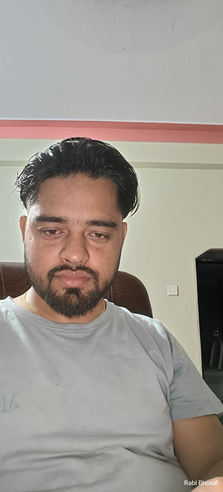

About Me
Dedicated financial professional with a proven track record of leading finance functions and driving strategic financial management across multiple companies. Expertise in managing accounts receivable, cash flow, intercompany reconciliation, and financial analysis. Adept at optimizing costs, forecasting, and fostering cross-functional collaboration.
Professional Experience
Newgen DigitalWorks Private Limited - Manager, Accounts & Finance (April 2019 – Present)
- Leading the finance function for three companies of the group and a division of the parent company, managing accounts receivable, and cash flow management/optimization.
- Maintaining Books of Account, closing accounts at the end of each month to prepare various management reports (MIS, Cashflow, Debtors and Creditors Ageing, Inventory position, and Work in Progress).
- Collaborating with senior management and the board to provide insightful variance analysis and strategic feedback based on monthly performance.
- Managing working capital requirements, reducing DSO, and forecasting cash flow needs for effective fund utilization.
- Overseeing accounts receivable processes, ensuring timely invoicing, monitoring ageing analysis, and building strong customer relationships.
- Playing a key role in automating business processes, enhancing efficiency and accuracy across various functions.
- Maintaining records of contracts with customers and vendors, conducting periodic reviews for renewal and terms adjustment.
- Streamlining expenses accrual and accounts payable procedures, maintaining effective vendor relationships, and reconciling outstanding payables.
- Developing and communicating budget guidelines, parameters, and templates, gathering historical financial data for analysis.
- Collaborating with business unit heads to compile data, analyze trends, and create accurate rolling forecasts.
- Presenting budget proposals to senior management, securing approval, and ensuring alignment with strategic goals.
- Conducting variance analysis to track performance against approved budgets and rolling forecasts.
- Managing and motivating team members to achieve common goals and deliver high-quality results.
- Facilitating performance reviews and providing continuous support for professional growth.
- Providing support to business unit heads while launching new products or services, assisting in the evaluation of potential investments, and projecting financial information for new products/services or investments.
T Narayanan & Co. - Articled Assistant (August 2015 - August 2018)
- Specialized in Accounts, Finance, Taxation & Audits.
- Performed internal audit of public companies, private limited companies, and partnership firms across different industries and sectors.
- Conducted statutory audits of private limited companies in various sectors.
- Completed tax audits for high-net-worth individuals, firms, and companies.
- Presented audit findings and conclusions to management.
Education
The Institute of Chartered Accountants of India - Chartered Accountant (Completed January 2019, 54%)
Indira Gandhi National Open University - Bachelor of Commerce (Completed March 2018, 61%)